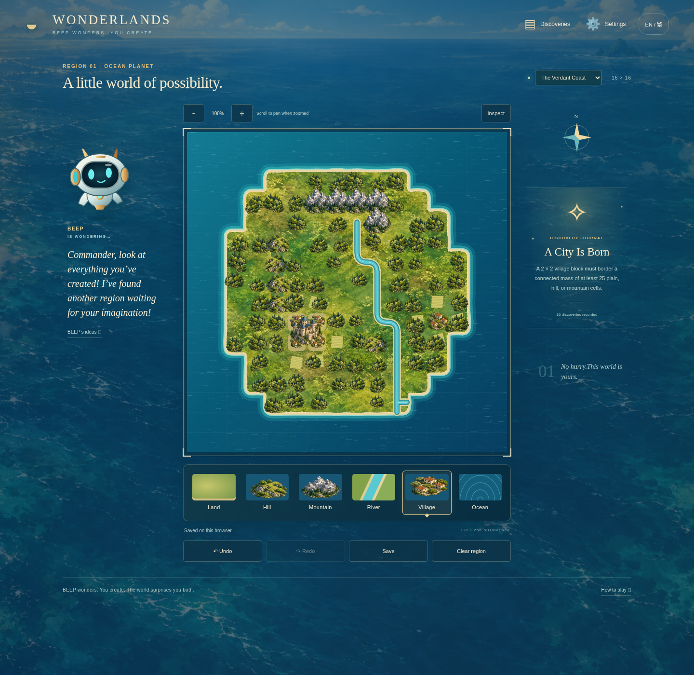
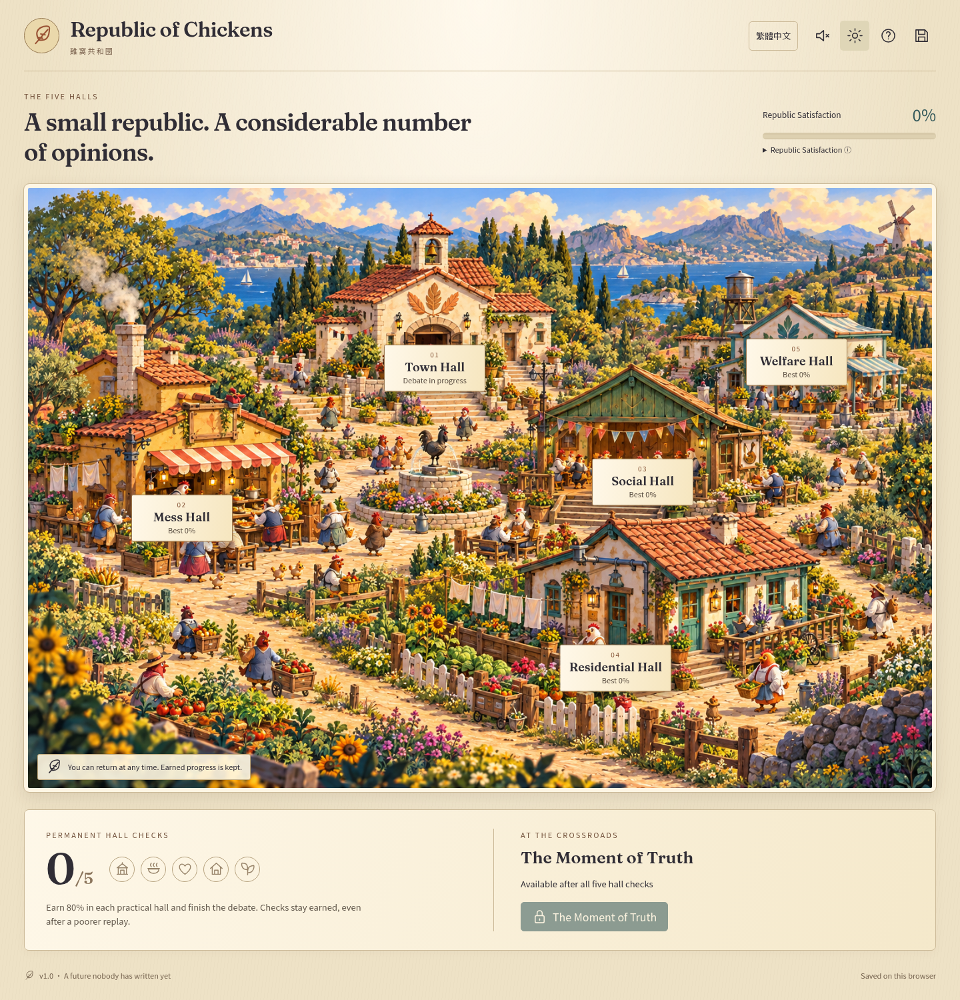
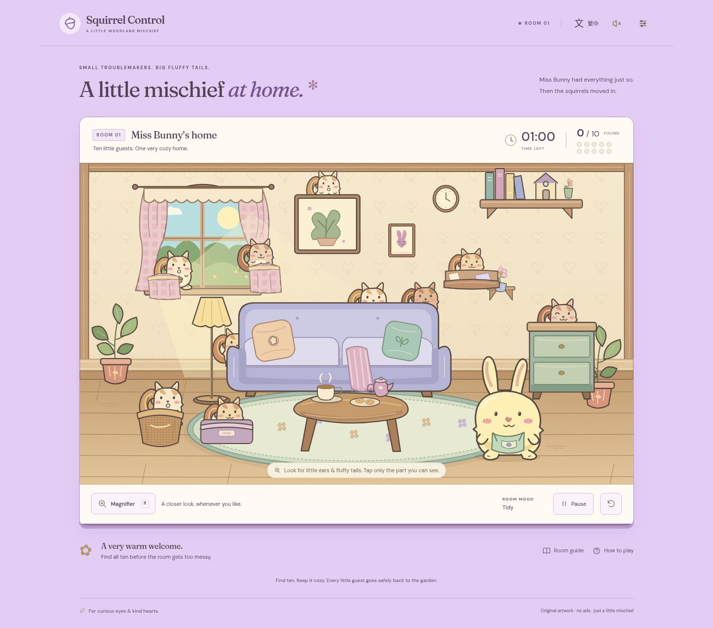

Featured · Game
Wonderlands
Shape an ocean planet, connect rivers, and discover a world of your own.
View gameSelected work

Featured · Game
Shape an ocean planet, connect rivers, and discover a world of your own.
View game
Game
Care for a small republic and meet its rather opinionated chickens.
View game
Game
Find ten squirrels in Miss Bunny’s increasingly chaotic cottage.
View gameExplore